4.3. Host IDS
1. ¿Qué es Host IDS?
Es un tipo de IDS (Intrusion Detection System) que se diferencia de otros tipos como el NIDS (Network IDS) en que está instalado en un equipo en vez de monitorizar un segmento de red. Se encarga de monitorizar el sistema operativo, los procesos y el tráfico existente en un equipo y de detectar posibles amenazas como cambios en el registro, directorios y otras acciones sospechosas.
1.1. Funcionamiento
El host IDS realiza una copia de seguridad sobre los archivos de configuración del sistema, permitiendo así que si se realiza cualquier tipo de ataque en el equipo, estos se restauren. También permite informar de si algún archivo fundamental del sistema ha sido modificado.
Otra de las opciones de los HIDS es usarlo de forma distribuida, es decir, más de un equipo en una red. Para ello es necesario instalar el HIDS en todos estos equipos. También es necesario tener un módulo centralizado que se encargue de gestionar todos estos hosts.
Algunos HIDS más famosos son:
- OSSEC: Procesa logs de manera eficiente, pero sin interfaz de usuario.
- SolarWinds Papertail: HIDS basado en la nube y centralización de logs.
ManageEngine EventLog Analyzer: Tiene capacidad de funcionar como HIDS o NIDS y de centralizar logs. - Splunk: HIDS especializado en detectar anomalías en el sistema.
- Sagan: HIDS con capacidad de detectar anomalías y de mostrar alertas mediante reglas, incluyendo opciones interesantes como la Geolocalización IP.
- Samhain: HIDS con funciones como comprobación de integridad de ficheros, monitorización y análisis de estos.
1.2. Ejemplo de Host IDS: Wazuh
Wazuh es un servidor de Host IDS de código abierto y libre cuya función es el análisis, comprobación y supervisión de registros. Además proporciona detección de rootkits, alertas basadas en el tiempo y respuesta activa. Sus componentes se rigen por la Licencia Pública General GNU, versión 2, y la Licencia Apache, Versión 2.0 (ALv2).
Wazuh también ofrece una solución de software como servicio (SaaS), y que es, Wazuh Cloud. Puedes consultar la documentación del servicio en la nube para obtener más información y aprovechar la versión de prueba de la nube para explorar este servicio.
En este apartado, se realizará la configuración de un servidor HIDS que permitirá instalar agentes en sistemas Windows, Linux y Mac.
2. Escenario de trabajo
De la página oficial, se obtienen los requerimientos mínimos y recomendados.
| 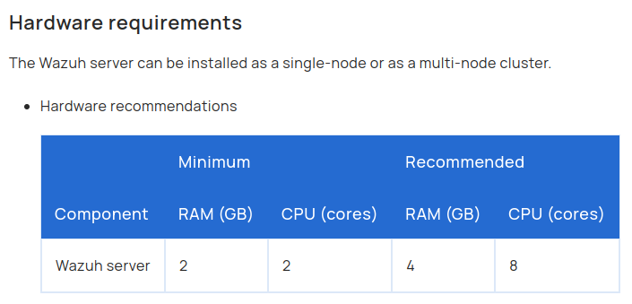 | 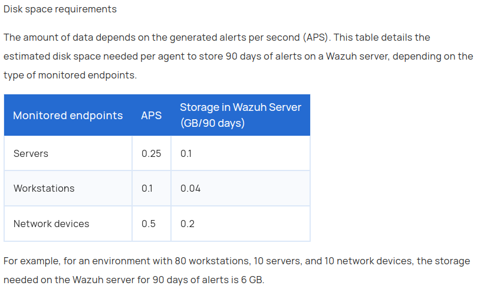 |
| Figura 1. Requerimientos de wazuh server. | |
El escenario de trabajo es el siguiente:
|
Servidor wazuh
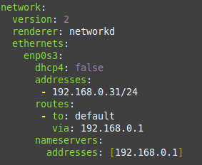 |
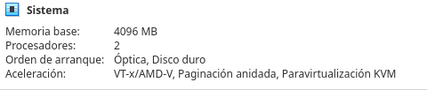 |
|
2 agentes:
|
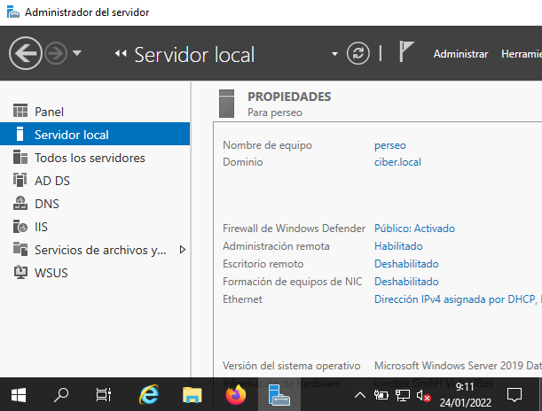 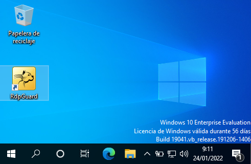 |
3. Instalación y configuración servidor Wazuh
Wazuh se compone de un único agente universal y tres componentes centrales:
- El servidor de Wazuh.
- El indexador de Wazuh.
- El panel de control de Wazuh.
Para obtener más información, consultar la documentación de introducción.
3.1. Instalación de los componentes centrales de Wazuh
Se pude elegir entre dos métodos de instalación para cada componente central de Wazuh. Ambas opciones brindan instrucciones para instalar los componentes centrales en un solo host o en hosts separados.
El indexador de Wazuh y el servidor de Wazuh pueden instalarse en un solo host o distribuirse en configuraciones de clúster, proporcionando escalabilidad, alta disponibilidad y rendimiento mejorado.
Para comprobar los requisitos y empezar a instalar el primero de los componentes centrales de Wazuh, hay que acceder la sección indexador de Wazuh.
1.1 Indexador |
El indexador de Wazuh es un motor de análisis y búsqueda de texto completo altamente escalable. Este componente central de Wazuh indexa y almacena alertas generadas por el servidor de Wazuh y proporciona capacidades de análisis y búsqueda de datos casi en tiempo real.
El indexador de Wazuh se puede instalar como un nodo único o como un clúster de nodos múltiples.
Requerimientos
Sistemas operativos recomendados. Wazuh se puede instalar en un sistema operativo Linux de 64 bits. Wazuh es compatible con las siguientes versiones del sistema operativo:
|
Amazon Linux 2 |
CentOS 7, 8 |
|
Red Hat Enterprise Linux 7, 8, 9 |
Ubuntu 16.04, 18.04, 20.04, 22.04 |
Hardware
| 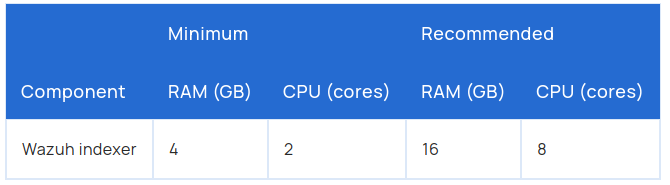 | 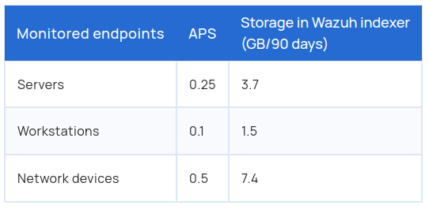 |
| Recomendaciones de hardware para cada nodo | Requisitos de espacio en disco. Por ejemplo, para un entorno con 80 estaciones de trabajo, 10 servidores y 10 dispositivos de red, el almacenamiento necesario en el servidor indexador de Wazuh para 90 días de alertas es de 230 GB. |
Una vez tengamos un equipo que cumpla con los requisitos mínimos, hay que elegir un método de instalación para comenzar a instalar el indexador de Wazuh. Los método son:
- Asistente de instalación de Wazuh: Instala el componente ejecutando un asistente que automatiza el proceso de instalación y configuración.
- Instalación paso a paso: Instala el componente siguiendo las instrucciones detalladas paso a paso.
Para este caso, se instala el indexador paso a paso. Este es el flujo de trabajo de instalación que seguirá:
- Creación de certificados.
- Instalación de Nodos.
- Inicialización de clúster.
1. Configurar
Los comandos a ejecutar son:
root@orion:/home/administrador# curl -sO https://packages.wazuh.com/4.3/wazuh-certs-tool.sh
root@orion:/home/administrador# curl -sO https://packages.wazuh.com/4.3/config.yml
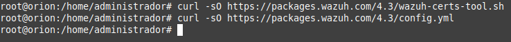
Para este caso, el nombre del indexer es node-1 y el del server wazuh-1. Dado que el servidor e indexer se instalarán en el mismo equipo, la ip del indexer, servidor y dashboard es la misma.
root@orion:/home/administrador# nano config.yml
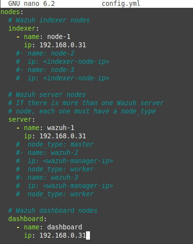
2. Generar certificados
Se establecen permisos de ejecución en wazuh-certs-tool.sh y se crean los certificados.
root@orion:/home/administrador# chmod 740 wazuh-certs-tool.sh
root@orion:/home/administrador# ./wazuh-certs-tool.sh -A
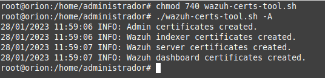
3. Comprimir certificados
Se comprimen todos los archivos necesarios, para que posteriormente, se copien en todos los nodos, incluidos el indexador de Wazuh, el servidor de Wazuh y los nodos del panel de control de Wazuh. Para este caso, dado que todos los servicios estarán en el mismo equipo, no será necesario.
root@orion:/home/administrador# tar -cvf ./wazuh-certificates.tar -C ./wazuh-certificates/ .
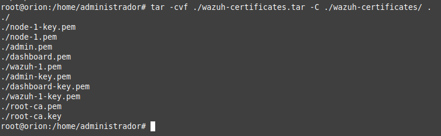
4. Instalar paquetes necesarios
Hay que instalar los paquetes debconf, adduser y procps si no se tienen. Para este caso, ya se tienen instalados.
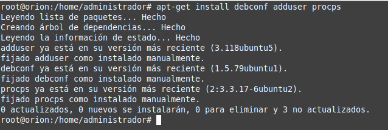
5. Agregar el repositorio de Wazuh
Los comandos a ejecutar son:
root@orion:/home/administrador# apt-get install gnupg apt-transport-http
root@orion:/home/administrador# curl -s https://packages.wazuh.com/key/GPG-KEY-WAZUH | gpg --no-default-keyring --keyring gnupg-ring:/usr/share/keyrings/wazuh.gpg --import && chmod 644 /usr/share/keyrings/wazuh.gpg
root@orion:/home/administrador# echo "deb [signed-by=/usr/share/keyrings/wazuh.gpg] https://packages.wazuh.com/4.x/apt/ stable main" | tee -a /etc/apt/sources.list.d/wazuh.list
root@orion:/home/administrador# apt update
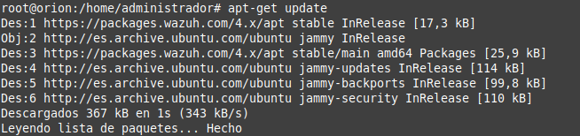
6. Instalar indexador
El siguiente paso es instalar el paquete del indexador de Wazuh.
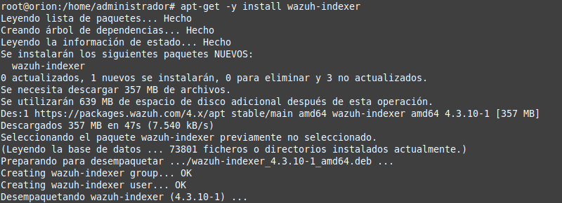
7. Configuración del indexador
Establece la dirección de este nodo para el tráfico HTTP y de transporte. El nodo se vinculará a esta dirección y la usará como su dirección de publicación. Acepta una dirección IP o un nombre de host.
root@orion:/home/administrador# nano /etc/wazuh-indexer/opensearch.yml
NOTA:
- discovery.seed_hosts, se deja comentado ya que se está configurando el indexador de Wazuh como un solo nodo. Para configuraciones de múltiples nodos, habría que quitar el comentario y configurar las direcciones IP de cada nodo maestro elegible.
- plugins.security.nodes_dn: Es la lista de los 'Distinguished Names' de los certificados de todos los nodos del clúster del indexador de Wazuh
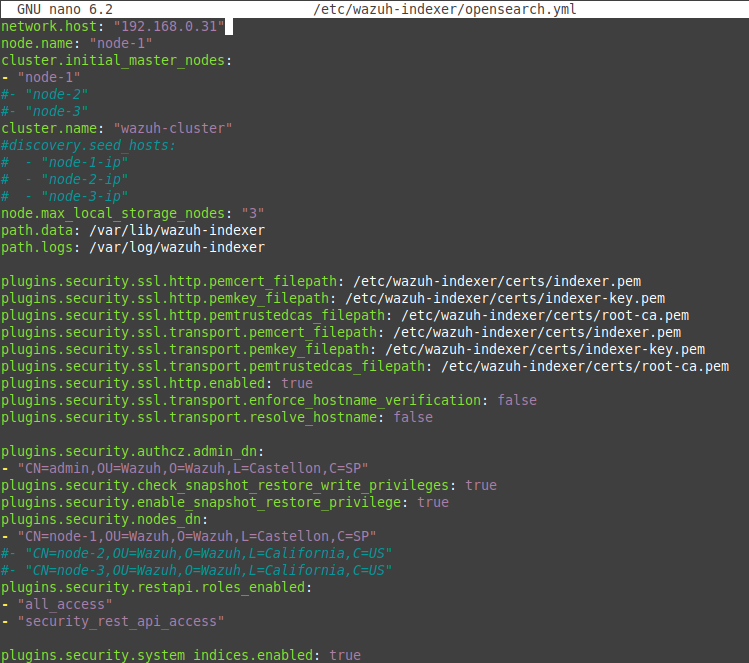
8. Implementación de certificados
Hay que colocar una copia del archivo wazuh-certificates.tar creado durante el paso de configuración inicial, en nuestro directorio de trabajo, para ello, hay que ejecutar los siguientes comandos reemplazando <indexer-node-name> con el nombre del nodo indexador de Wazuh que se ha configurando anteriormente en config.yml. para este caso, se configuró como node-1.
Con esto, se consigue implementar los certificados SSL para cifrar las comunicaciones entre los componentes centrales de Wazuh.
root@orion:/home/administrador# NODE_NAME=node-1
root@orion:/home/administrador# mkdir /etc/wazuh-indexer/certs
root@orion:/home/administrador# tar -xf ./wazuh-certificates.tar -C /etc/wazuh-indexer/certs/ ./$NODE_NAME.pem ./$NODE_NAME-key.pem ./admin.pem ./admin-key.pem ./root-ca.pem
root@orion:/home/administrador# mv -n /etc/wazuh-indexer/certs/$NODE_NAME.pem /etc/wazuh-indexer/certs/indexer.pem
root@orion:/home/administrador# mv -n /etc/wazuh-indexer/certs/$NODE_NAME-key.pem /etc/wazuh-indexer/certs/indexer-key.pem
root@orion:/home/administrador# chmod 500 /etc/wazuh-indexer/certs
root@orion:/home/administrador# chmod 400 /etc/wazuh-indexer/certs/*
root@orion:/home/administrador# chown -R wazuh-indexer:wazuh-indexer /etc/wazuh-indexer/certs
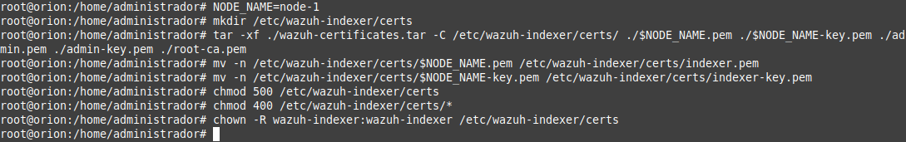
9. Iniciar servicio
A continuación, hay que habilitar e iniciar el servicio de indexación de Wazuh.
root@orion:/home/administrador# systemctl daemon-reload
root@orion:/home/administrador# systemctl enable wazuh-indexer
root@orion:/home/administrador# systemctl start wazuh-indexer
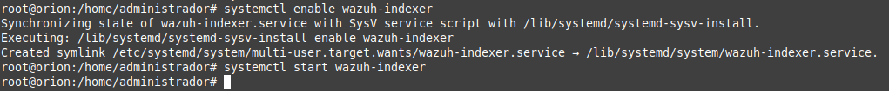
10. Estado del servicio
Se comprueba el estado del servicio y como se observar, sólo aparecen unos warnings que no son importantes.
root@orion:/home/administrador# systemctl status wazuh-indexer
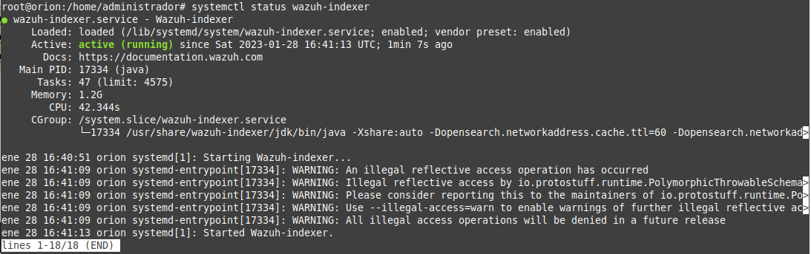
11. Inicialización del cluster
Hay que ejecutar el script del indexador de Wazuh indexer-security-init.sh en cualquier nodo del indexador de Wazuh para cargar la información de los nuevos certificados e iniciar el clúster de un solo nodo o de varios nodos.
root@orion:/home/administrador# /usr/share/wazuh-indexer/bin/indexer-security-init.sh
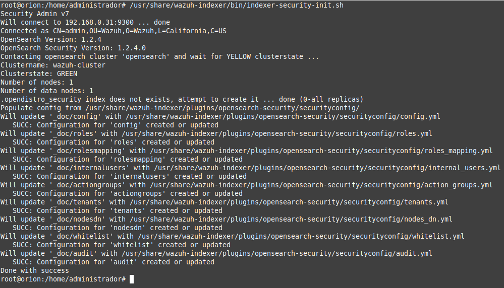
12. Prueba del clúster
A continuación, se realiza la prueba de la instalación del clúster, donde 192.168.0.31 es la ip del servidor.
root@orion:/home/administrador# curl -k -u admin:admin https://192.168.0.31:9200
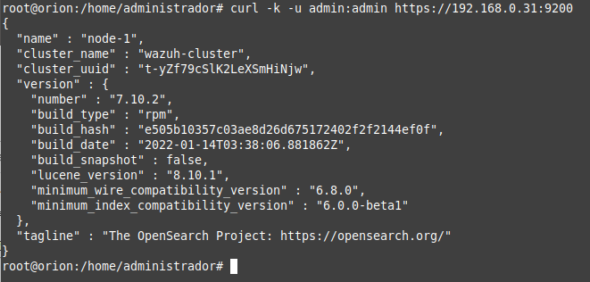
Una vez el indexador de Wazuh se ha iniciado correctamente en el clúster de nodo único, ya se puede continuar con la siguiente etapa que es la instalación del servidor de Wazuh.
Nota: Si se desea desinstalar el indexador de Wazuh, consulte desinstalar el indexador de Wazuh.
1.2 Servidor de Wazuh |
El servidor de Wazuh analiza los datos recibidos de los agentes de Wazuh, disparando alertas cuando se detectan amenazas o anomalías. También se utiliza para administrar de forma remota la configuración de los agentes y monitorizar su estado.
Se puede instalar el servidor Wazuh en un solo host. Como alternativa, se puede instalar de manera distribuida en varios nodos en una configuración de clúster. Las configuraciones de varios nodos proporcionan una alta disponibilidad y un rendimiento mejorado, y si se combina con un balanceador de carga de red, se puede lograr un uso eficiente de su capacidad.
El servidor Wazuh se puede instalar como un nodo único o como un clúster de varios nodos.
Requerimientos
Sistemas operativos recomendados. Wazuh se puede instalar en un sistema operativo Linux de 64 bits. Wazuh es compatible con las siguientes versiones del sistema operativo:
|
Amazon Linux 2 |
CentOS 7, 8 |
|
Red Hat Enterprise Linux 7, 8, 9 |
Ubuntu 16.04, 18.04, 20.04, 22.04 |
Hardware
| 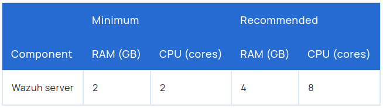 | 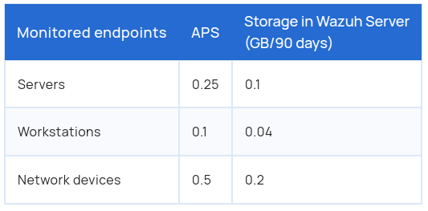 |
| Recomendaciones de hardware para cada nodo | Requisitos de espacio en disco. La cantidad de datos depende de las alertas generadas por segundo (APS). Esta tabla detalla el espacio en disco estimado necesario por agente para almacenar 90 días de alertas en un servidor de Wazuh, según el tipo de terminales monitorizados. Por ejemplo, para un entorno con 80 estaciones de trabajo, 10 servidores y 10 dispositivos de red, el almacenamiento necesario en el servidor de Wazuh para 90 días de alertas es de 6 GB. |
La instalación de wazuh server, se puede realizar de varias maneras (asistente o paso a paso).
Para este caso, se instala el servidor paso a paso. Este es el flujo de trabajo de instalación que seguirá:
- Instalación del nodo del servidor Wazuh.
- Configuración de clúster para implementación de múltiples nodos o único nodo.
1. Agregar el repositorio de Wazuh
Dado que para este caso se se está instalando el servidor de Wazuh en el mismo host que el indexador de Wazuh, se pueden omitir estos pasos, ya que se ha agregado el repositorio de Wazuh anteriormente. Los comandos que se utilizaron anteriormente en el indexador son:
root@orion:/home/administrador# apt-get install gnupg apt-transport-http
root@orion:/home/administrador# curl -s https://packages.wazuh.com/key/GPG-KEY-WAZUH | gpg --no-default-keyring --keyring gnupg-ring:/usr/share/keyrings/wazuh.gpg --import && chmod 644 /usr/share/keyrings/wazuh.gpg
root@orion:/home/administrador# echo "deb [signed-by=/usr/share/keyrings/wazuh.gpg] https://packages.wazuh.com/4.x/apt/ stable main" | tee -a /etc/apt/sources.list.d/wazuh.list
root@orion:/home/administrador# apt update
2. Instalación del administrador de Wazuh
Hay que instalar el paquete del administrador de Wazuh.
root@orion:/home/administrador# apt install wazuh-manager
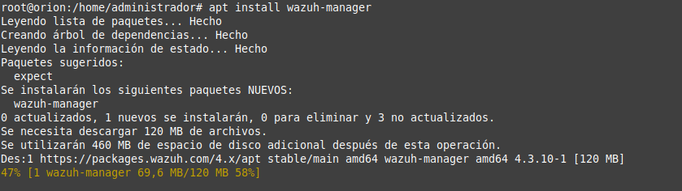
3. Habilitar e iniciar servicio
A continuación, hay que habilitar e iniciar el servicio de administrador de Wazuh.
root@orion:/home/administrador# systemctl daemon-reload
root@orion:/home/administrador# systemctl enable wazuh-manager
root@orion:/home/administrador# systemctl start wazuh-manager
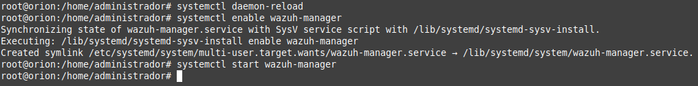
4. Verificación
Se verifica el estado del administrador de Wazuh.
root@orion:/home/administrador# systemctl status wazuh-manager
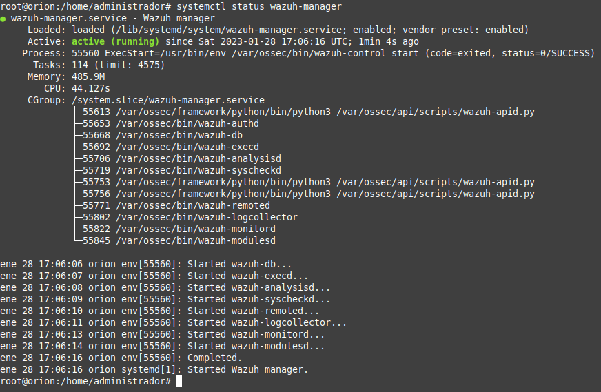
5. Instalar Filebeat
Se instala el paquete filebeat.
root@orion:/home/administrador# apt install filebeat
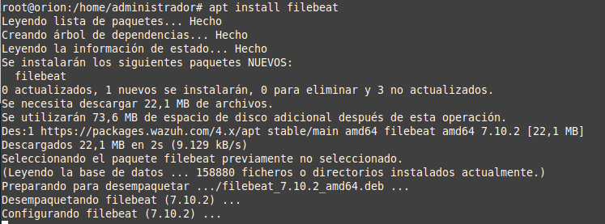
6. Configurar filebeat
Hay que descargar el archivo de configuración de Filebeat preconfigurado.
root@orion:/home/administrador# curl -so /etc/filebeat/filebeat.yml https://packages.wazuh.com/4.3/tpl/wazuh/filebeat/filebeat.yml
A continuación, hay que editar el archivo de configuración /etc/filebeat/filebeat.yml con los valores siguientes:
output.elasticsearch:
hosts: ["192.168.0.31:9200"]
protocol: https
username: ${username}
password: ${password}
donde:
- hosts: Es la lista de nodos indexadores de Wazuh a los que conectarse. Se puede utilizar direcciones IP o nombres de host. De forma predeterminada, el host se establece en localhost: ["127.0.0.1:9200"]. donde hay que reemplazarlo con la dirección del indexador de Wazuh según corresponda, para este caso, 192.168.0.31.
- Si se tiene más de un nodo indexador de Wazuh, se pueden separar las direcciones con comas. Por ejemplo, hosts: ["10.0.0.1:9200", "10.0.0.2:9200", "10.0.0.3:9200"]. Para este caso, no es necesario.
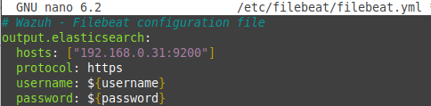
7. Crear filebeat keystore
Creamos un almacén de claves de Filebeat para almacenar de forma segura las credenciales de autenticación. Se agrega el nombre de usuario y la contraseña predeterminados admin:admin al almacén de claves de secretos.root@orion:/home/administrador# filebeat keystore create
root@orion:/home/administrador# echo admin | filebeat keystore add username --stdin --force
root@orion:/home/administrador# echo admin | filebeat keystore add password --stdin --force
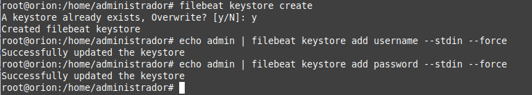
8. Descarga plantilla
Descarga la plantilla de alertas para el indexador de Wazuh.
root@orion:/home/administrador# curl -so /etc/filebeat/wazuh-template.json https://raw.githubusercontent.com/wazuh/wazuh/4.3/extensions/elasticsearch/7.x/wazuh-template.json
root@orion:/home/administrador# chmod go+r /etc/filebeat/wazuh-template.json
9. Instalar módulo filebeat
Se instala el módulo Wazuh para Filebeat.
root@orion:/home/administrador# curl -s https://packages.wazuh.com/4.x/filebeat/wazuh-filebeat-0.2.tar.gz | tar -xvz -C /usr/share/filebeat/module
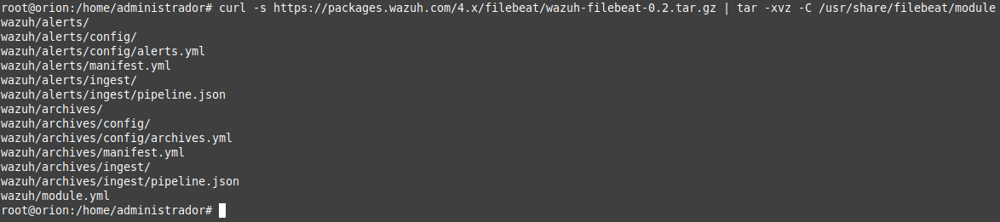
10. Implementación de certificados
Hay que desempaquetar el archivo wazuh-certificates.tar creado durante el paso de configuración inicial (indexador), en el directorio /etc/filebeat/certs, para ello, hay que ejecutar los siguientes comandos donde NODE_NAME es el nombre del nodo indexador de Wazuh que se ha configurando anteriormente en config.yml. para este caso, se configuró como node-1.
root@orion:/home/administrador# NODE_NAME=node-1
root@orion:/home/administrador# mkdir /etc/filebeat/certs
root@orion:/home/administrador# tar -xf ./wazuh-certificates.tar -C /etc/filebeat/certs/ ./$NODE_NAME.pem ./$NODE_NAME-key.pem ./root-ca.pem
root@orion:/home/administrador# mv -n /etc/filebeat/certs/$NODE_NAME.pem /etc/filebeat/certs/filebeat.pem
root@orion:/home/administrador# mv -n /etc/filebeat/certs/$NODE_NAME-key.pem /etc/filebeat/certs/filebeat-key.pem
root@orion:/home/administrador# chmod 500 /etc/filebeat/certs
root@orion:/home/administrador# chmod 400 /etc/filebeat/certs/*
root@orion:/home/administrador# chown -R root:root /etc/filebeat/certs
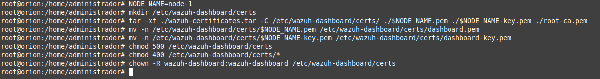
11. Iniciar servicio
A continuación, hay que habilitar e iniciar el servicio de indexación de Wazuh.
root@orion:/home/administrador# systemctl daemon-reload
root@orion:/home/administrador# systemctl enable filebeat
root@orion:/home/administrador# systemctl start filebeat
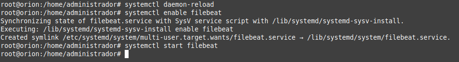
12. Estado del servicio
Se comprueba el estado del servicio.
root@orion:/home/administrador# systemctl status filebeat
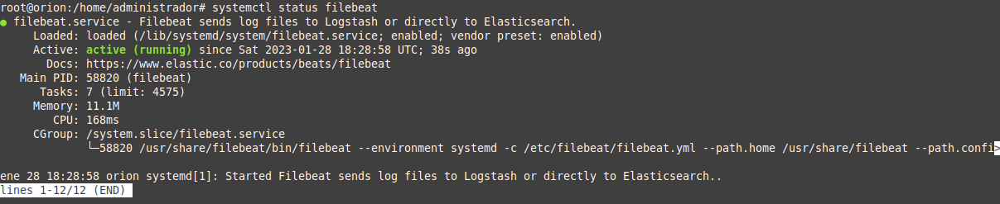
13. Verificar el servicio
Para finalizar, hay que ejecutar el siguiente comando para verificar que Filebeat se instaló correctamente. La salida del mismo tiene que ser similar a la de la figura.
root@orion:/home/administrador# filebeat test output
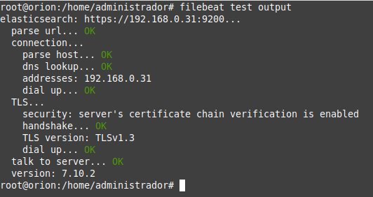
Con esto, el nodo servidor Wazuh ahora está instalado correctamente. Si se tienen más nodos, habría que repetir esta etapa del proceso de instalación para cada nodo del servidor de Wazuh en el clúster de Wazuh, para luego continuar con la configuración del clúster de Wazuh. Dado que este para este caso se trabaja con un clúster de nodo único del servidor Wazuh, todo está configurado y se puede continuar con la instalación del Dashboard.
1.3 Dashboard |
Este componente central es una interfaz web flexible e intuitiva para extraer, analizar y visualizar datos de seguridad. Proporciona paneles listos para usar, lo que le permite navegar sin problemas a través de la interfaz de usuario.
Con el dashboard de Wazuh, los usuarios pueden visualizar eventos de seguridad, vulnerabilidades detectadas, datos de monitorización de integridad de archivos, resultados de evaluación de configuración, eventos de monitoreo de infraestructura en la nube y estándares de cumplimiento normativo.
Requerimientos
Sistemas operativos recomendados. Wazuh se puede instalar en un sistema operativo Linux de 64 bits. Wazuh es compatible con las siguientes versiones del sistema operativo:
|
Amazon Linux 2 |
CentOS 7, 8 |
|
Red Hat Enterprise Linux 7, 8, 9 |
Ubuntu 16.04, 18.04, 20.04, 22.04 |
Hardware
| 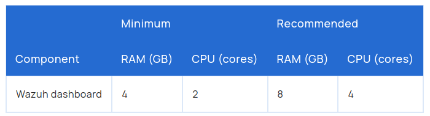 |
Wazuh dashboard soporta los siguientes navegadores:
|
| Recomendaciones hardware. | Compatibilidad del navegador |
La instalación de wazuh dashboard, se puede realizar de varias maneras (asistente o paso a paso).
Para este caso, se instala el dashbooard paso a paso. Este es el flujo de trabajo de instalación que seguirá:
- Instalación de dependencias de paquetes.
- Agregar el repositorio de Wazuh.
- Instalación del dashboard de Wazuh.
- Configuración del dashboard de Wazuh.
- Implementación de certificados.
- Inicio del servicio dashboard de Wazuh.
- Asegurar la instalación de Wazuh.
1. Instalación de dependencias de paquetes
Hay que instalar los siguientes paquetes si no se tienen.
root@orion:/home/administrador# apt install debhelper tar curl libcap2-bin
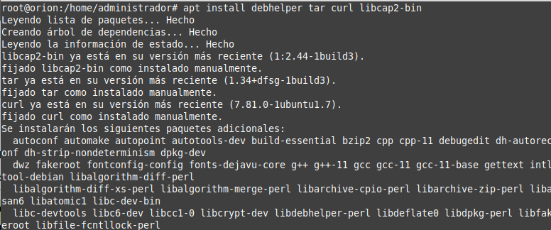
2. Agregar el repositorio de Wazuh
Dado que para este caso se se está instalando el servidor de Wazuh en el mismo host que el indexador y servidor de Wazuh, se pueden omitir estos pasos, ya que ha agregado el repositorio de Wazuh anteriormente. Los comandos que se utilizaron anteriormente en el indexador son:
root@orion:/home/administrador# apt install gnupg apt-transport-http
root@orion:/home/administrador# curl -s https://packages.wazuh.com/key/GPG-KEY-WAZUH | gpg --no-default-keyring --keyring gnupg-ring:/usr/share/keyrings/wazuh.gpg --import && chmod 644 /usr/share/keyrings/wazuh.gpg
root@orion:/home/administrador# echo "deb [signed-by=/usr/share/keyrings/wazuh.gpg] https://packages.wazuh.com/4.x/apt/ stable main" | tee -a /etc/apt/sources.list.d/wazuh.list
root@orion:/home/administrador# apt update
3. Instalación del dashboard Wazuh
A continuación se instala el dashboard de Wazuh.
root@orion:/home/administrador# apt install wazuh-dashboard
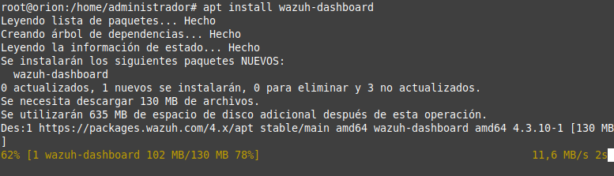
4. Configuración
Hay que editar el archivo /etc/wazuh-dashboard/opensearch_dashboards.yml y reemplazar los siguientes valores:
server.host: Es la configuración específica del host del servidor del panel de control de Wazuh. Para permitir que los usuarios remotos se conecten, hay que establecer el valor en la dirección IP o el nombre DNS del servidor del panel de control de Wazuh. El valor 0.0.0.0 aceptará todas las direcciones IP disponibles del host.
opensearch.hosts: Son las URL de las instancias del indexador de Wazuh que se usarán para todas las consultas. El dashboard de Wazuh se puede configurar para conectarse a varios nodos indexadores de Wazuh en el mismo clúster. Las direcciones de los nodos se pueden separar por comas. Para nuestro caso, dado que sólo tenermos un cluster, quedaría así:
server.host: 0.0.0.0
server.port: 443
opensearch.hosts: https://192.168.0.31:9200
opensearch.ssl.verificationMode: certificate
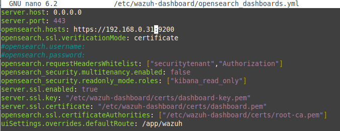
5. Implementación de certificados
Hay que desempaquetar el archivo wazuh-certificates.tar creado durante el paso de configuración inicial (indexador), en el directorio /etc/wazuh-dashboard/certs, para ello, hay que ejecutar los siguientes comandos donde NODE_NAME es el nombre del nodo indexador de Wazuh que se ha configurando anteriormente en config.yml. para este caso, se configuró como node-1.
root@orion:/home/administrador# NODE_NAME=node-1
root@orion:/home/administrador# mkdir /etc/wazuh-dashboard/certs
root@orion:/home/administrador# tar -xf ./wazuh-certificates.tar -C /etc/wazuh-dashboard/certs/ ./$NODE_NAME.pem ./$NODE_NAME-key.pem ./root-ca.pem
root@orion:/home/administrador# mv -n /etc/wazuh-dashboard/certs/$NODE_NAME.pem /etc/wazuh-dashboard/certs/dashboard.pem
root@orion:/home/administrador# mv -n /etc/wazuh-dashboard/certs/$NODE_NAME-key.pem /etc/wazuh-dashboard/certs/dashboard-key.pem
root@orion:/home/administrador# chmod 500 /etc/wazuh-dashboard/certs
root@orion:/home/administrador# chmod 400 /etc/wazuh-dashboard/certs/*
root@orion:/home/administrador# chown -R wazuh-dashboard:wazuh-dashboard /etc/wazuh-dashboard/certs
6. Habilitar e inicializar el servicio
A continuación, hay que habilitar e iniciar el servicio dashboard de Wazuh.root@orion:/home/administrador# systemctl daemon-reload
root@orion:/home/administrador# systemctl enable wazuh-dashboard
root@orion:/home/administrador# systemctl start wazuh-dashboard

7. Verificar el servicio
Se verifica el servicio para comprobar que todo está correcto:root@orion:/home/administrador# systemctl status wazuh-dashboard
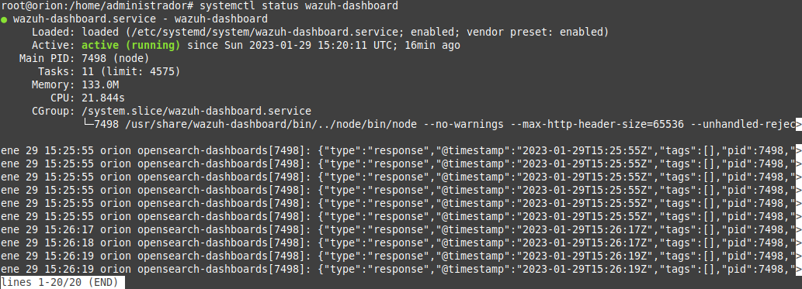
8. Acceso
Una vez iniciado el servicio, ya podemos acceder a la interfaz web de Wazuh en esta url https://192.168.0.31 y con estas credenciales:
- Username: admin
- Password: admin
| 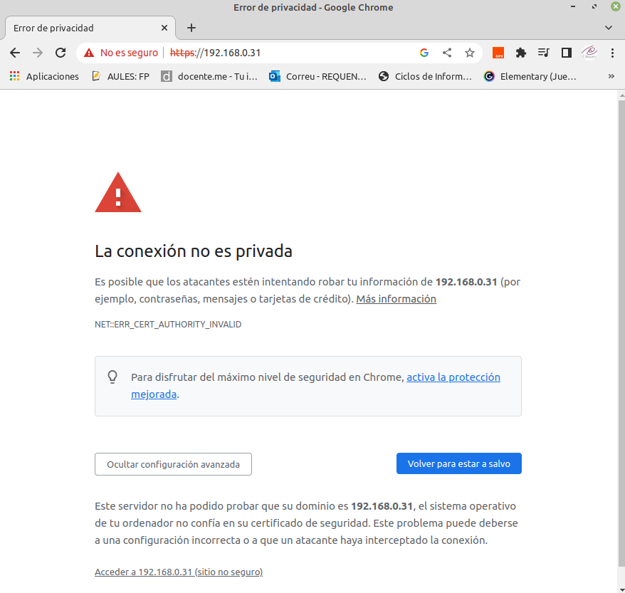 | 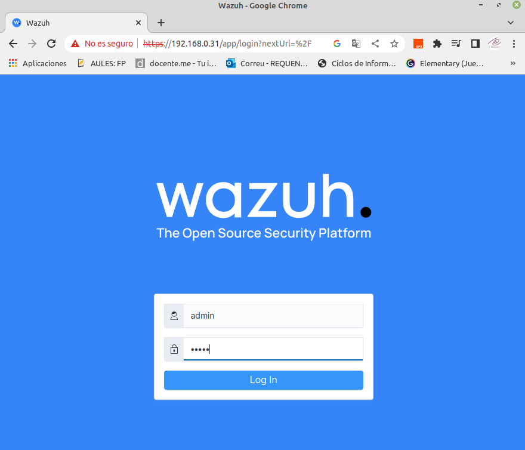 |
| Hay que pulsa Acceder (sitio no seguro) | Insertamos las credenciales por defecto |
9. Panel
Una vez se han validado las credenciales correctamente, se abre el panel principal del administrador wazuh.
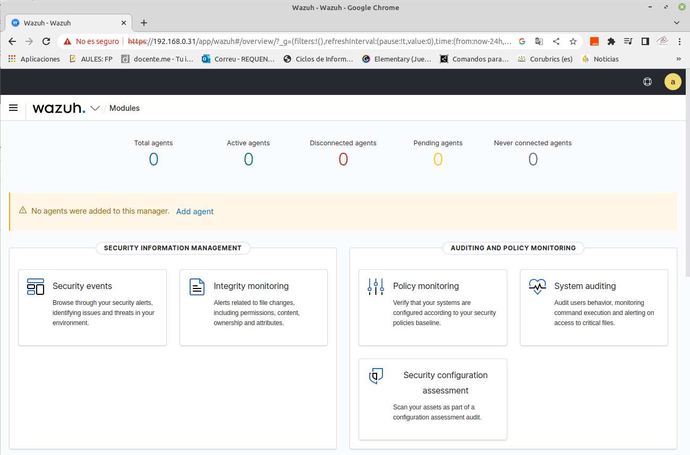
4. Asegurar la instalación de Wazuh
Una vez se han instalado y configurado todos los componentes centrales de Wazuh, es necesario cambiar las credenciales predeterminadas para proteger la infraestructura de posibles ataques. Para ello, hay que seleccionar el tipo de implementación y seguir las instrucciones para cambiar las contraseñas predeterminadas tanto para la API de Wazuh como para los usuarios del indexador de Wazuh.
Para la 'implementación todo en uno' (es este caso), el procedimiento es el siguiente:
1. Para cada nodo del indexador de Wazuh, hay que utilizar la herramienta de contraseñas de Wazuh para cambiar las contraseñas de los usuarios del indexador de Wazuh. Dado que para este caso sólo se tiene un nodo maestro, ejecutaremos el script para generar las contraseñas de los usuarios del indexador de Wazuh y las de los usuarios de la API de Wazuh.
En primer lugar hay que descargar la herramienta de contraseñas de Wazuh (se tiene también en /usr/share/wazuh-indexer/plugins/opensearch-security/tools/) y luego utilizarla para cambiar las contraseñas.
root@orion:/home/administrador# curl -sO https://packages.wazuh.com/4.3/wazuh-passwords-tool.sh
root@orion:/home/administrador# bash wazuh-passwords-tool.sh --change-all --admin-user wazuh --admin-password wazuh
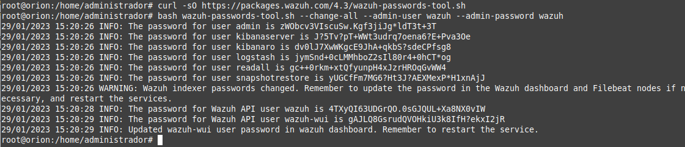
29/01/2023 15:20:26 INFO: The password for user admin is zWObcv3VIscuSw.Kgf3jiJg*ldT3t+3T
29/01/2023 15:20:26 INFO: The password for user kibanaserver is J?5Tv?pT+WWt3udrq7oena6?E+Pva3Oe
29/01/2023 15:20:26 INFO: The password for user kibanaro is dv0lJ7XwWKgcE9JhA+qkbS?sdeCPfsg8
29/01/2023 15:20:26 INFO: The password for user logstash is jymSnd+0cLMMhboZ2sIl80r4+0hCT*og
29/01/2023 15:20:26 INFO: The password for user readall is gc++0rkm+xtQfyunpH4xJzrHROqGvWW4
29/01/2023 15:20:26 INFO: The password for user snapshotrestore is yUGCfFm7MG6?Ht3J?AEXMexP*H1xnAjJ
29/01/2023 15:20:26 WARNING: Wazuh indexer passwords changed. Remember to update the password in the Wazuh dashboard and Filebeat nodes if necessary, and restart the services.
29/01/2023 15:20:28 INFO: The password for Wazuh API user wazuh is 4TXyQI63UDGrQO.0sGJQUL+Xa8NX0vIW
29/01/2023 15:20:29 INFO: The password for Wazuh API user wazuh-wui is gAJLQ8GsrudQVOHkiU3k8IfH?ekxI2jR
29/01/2023 15:20:29 INFO: Updated wazuh-wui user password in wazuh dashboard. Remember to restart the service.
Después, desde el panel de wazuh, se podrá cambiar el password del usuario admin, para ello, hay que acceder al icono superior derecha del panel y pulsar 'Reset password'.
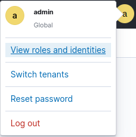
2. En todos los nodos del servidor Wazuh (para este caso sólo se tiene 1), hay que ejecutar el siguiente comando para actualizar la contraseña de administrador en el almacén de claves de Filebeat, reemplazando <admin-password> con la contraseña aleatoria generada anteriormente que para este caso es: zWObcv3VIscuSw.Kgf3jiJg*ldT3t+3T
root@orion:/home/administrador# echo <admin-password> | filebeat keystore add password --stdin --force
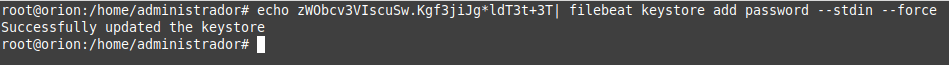
Para que los cambios tengan efecto, hay que reiniciar el servicio filebeat.
root@orion:/home/administrador# systemctl restart filebeat
3. En el nodo dashboard de Wazuh, hay que ejecutar el siguiente comando para actualizar la contraseña del servidor kibana en el almacén de claves del dashboard de Wazuh. Hay que reemplazar <kibanaserver-password> con la contraseña aleatoria generada anteriormente que para este caso es: J?5Tv?pT+WWt3udrq7oena6?E+Pva3Oe
root@orion:/home/administrador# echo <kibanaserver-password> | /usr/share/wazuh-dashboard/bin/opensearch-dashboards-keystore --allow-root add -f --stdin opensearch.password
Seguidamente, hay que actualizar el archivo de configuración /usr/share/wazuh-dashboard/data/wazuh/config/wazuh.yml con la nueva contraseña wazuh-wui generada anteriormente que para este caso es: gAJLQ8GsrudQVOHkiU3k8IfH?ekxI2jR
root@orion:/home/administrador# nano /usr/share/wazuh-dashboard/data/wazuh/config/wazuh.yml
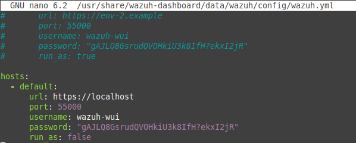
Para que los cambios tengan efecto, hay que reiniciar el servicio wazuh-dashboard.
root@orion:/home/administrador# systemctl restart wazuh-dashboard
5. Eliminar tar de certificados
Dado que no se van a instalar otros componentes de Wazuh en este nodo, hay que eliminar el archivo wazuh-certificates.tar para aumentar la seguridad.
root@orion:/home/administrador# rm -f ./wazuh-certificates.tar
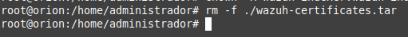
6. Integrar agentes
En los siguientes vídeos, se describe el proceso de integración de un agente Windows y Ubuntu en el servidor HIDS Wazuh.
| Vídeo 1. Integración agente Windows. | Vídeo 2. Integración agente Ubuntu. |
7. Videotutorial instalación Wazuh versión 2022
En el siguiente vídeo, se describe el proceso de configuración del servidor HIDS Wazuh mediante un método que existía en la página oficial el año 2022.
Vídeo 2. Instalación y configuración de Wazuh.
8. Operaciones administrativas en los servicios kibana y elasticsearch
Si al acceder por https aparece la siguiente alerta:

Figura 1. Alerta informativa sobre el servidor Kibana.
Hay que comprobar el estado de kibana para ver dónde está el problema, para este caso, se lista el estado del kibana y como se puede observar, el problema es originado con la conexión con elasticsearch.
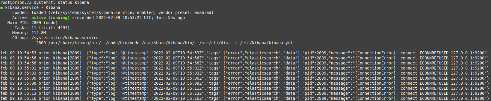
Figura 2. Status de Kibana.
Para solucionar el problema, hay que modificar la dirección de localhost por la ip del servidor. Para este escenario, la ip del servidor es 192.168.0.30. El comando a ejecutar es el siguiente:
root@orion:/# curl -u elastic:changeme http://192.168.0.30:9200
Una vez ejecutado el comando, no es necesario hacer un restart del servicio kibana. Si se lista de nuevo el estado del kibana, se puede observar que el problema se ha solucionado.
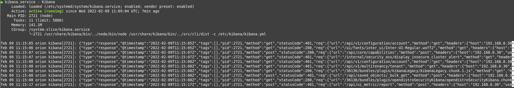
Figura 3. Status de Kibana.
9. Referencias
Obra publicada con Licencia Creative Commons Reconocimiento No comercial Compartir igual 4.0